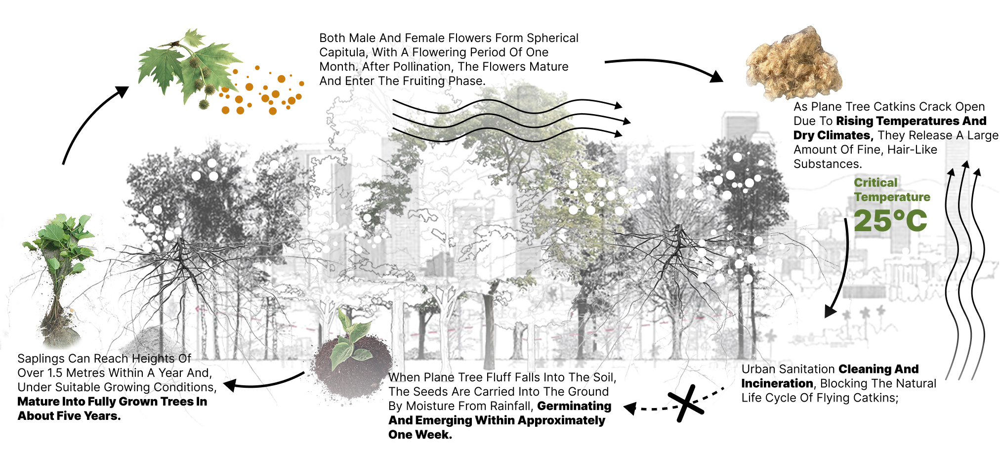
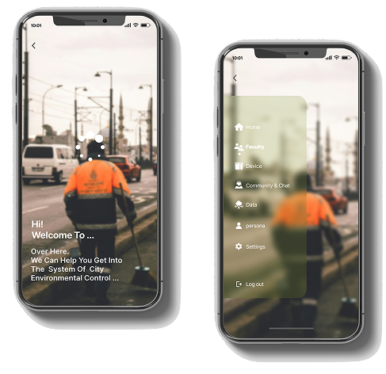
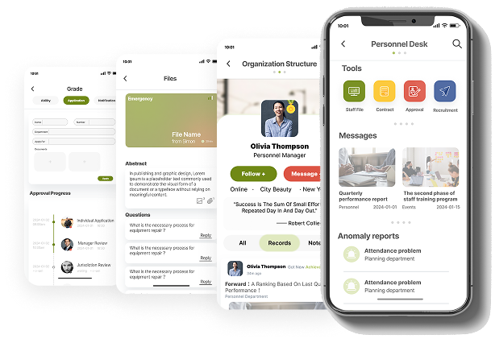
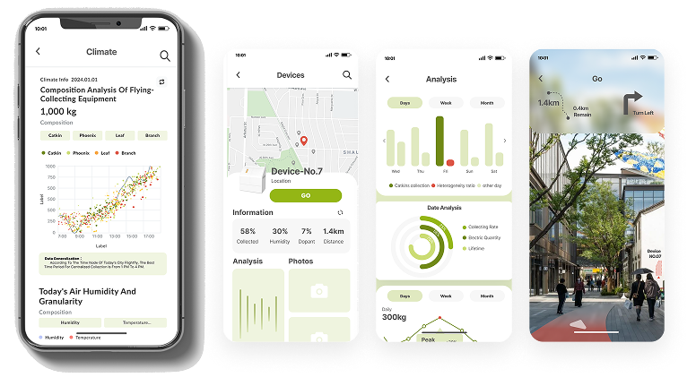
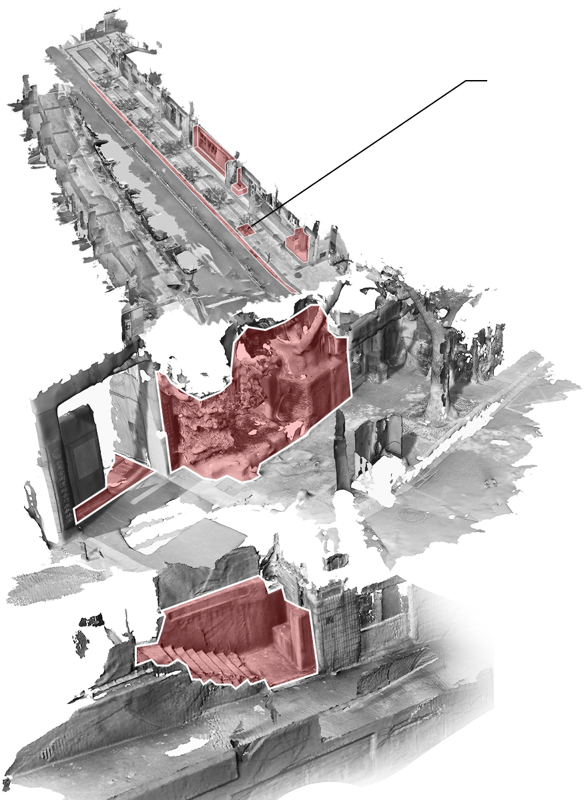
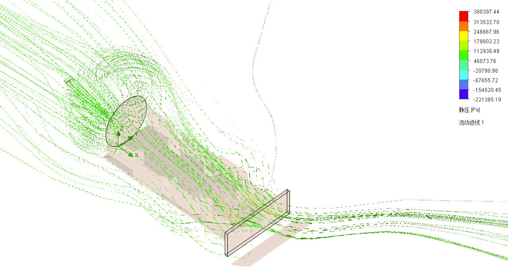
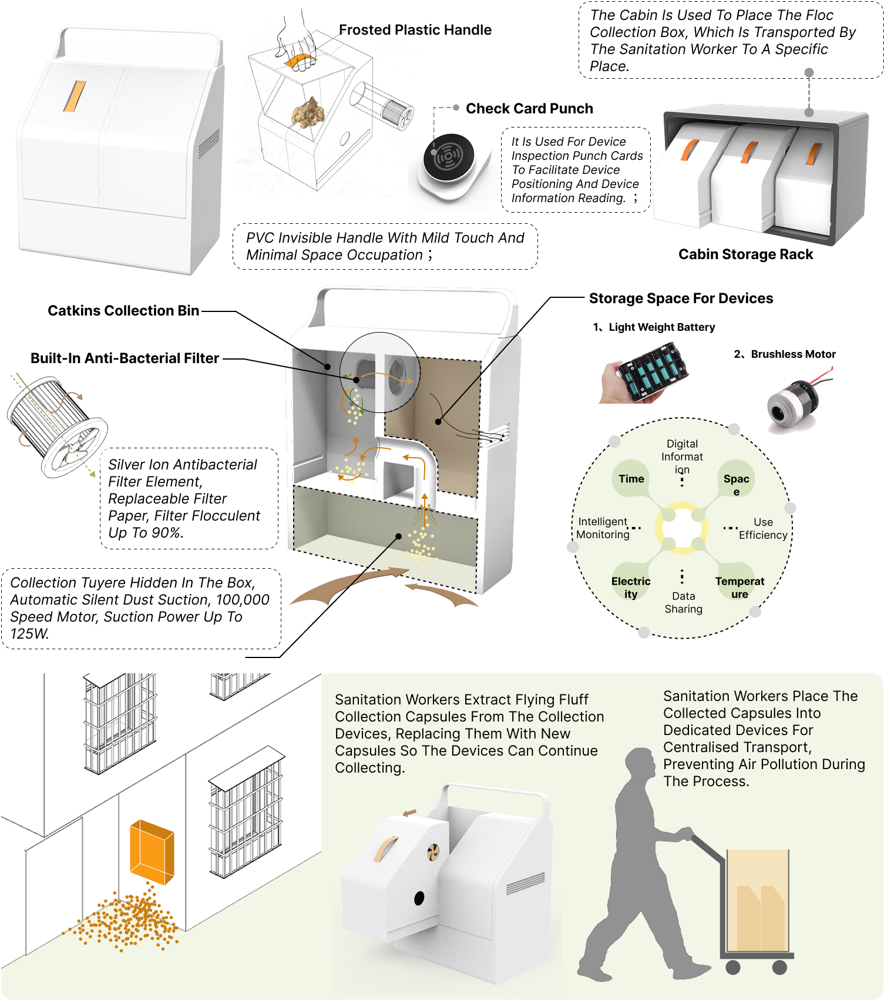

In modern urban ecosystems, the natural rhythms of plant life cycles have been disrupted; in some instances, vegetation is even directly severed or removed by municipal authorities. Functional plant components—such as fallen leaves, pollen, blossoms, and seeds—often impose numerous intractable negative impacts on the daily lives of residents, leading to their frequent classification as "waste" and subsequent disposal within urban areas. This system has been custom-designed to address the sustainable utilization of urban organic waste. It comprises three core modules: an intelligent prediction system, smart collection equipment, and personnel operations management. The system aims to provide relevant industries with a more efficient and human-centric operational model, thereby fostering continuous development and refined management within the field of environmental stewardship.
This project proposes a data-driven urban organic waste monitor and management system that integrates environmental sensing, predictive modeling, and real-time operational coordination. By collecting environmental data and simulating spatial accumulation patterns, the system anticipates when and where organic waste is likely to concentrate. These insights are connected to a network of sensor-enabled collection devices and a centralized management platform, enabling dynamic workforce allocation and infrastructure deployment. Through the integration of prediction, monitoring, and workforce management, the system transforms waste collection from a reactive process into a proactive, data-informed operation, improving efficiency at both the field and management levels.


The workforce management module supports both on-site operations and management-level decision-making across the organization. For daily operations, the system enables managers to assign cleaning tasks based on real-time waste data and location, adjust staffing levels according to workload, and monitor task completion across multiple sites. At the management level, the platform provides a visual overview of workforce distribution, task status, and operational performance, allowing supervisors to identify inefficiencies, rebalance resources, and respond to changing environmental conditions. The system integrates attendance records, task logs, and performance data into a centralized dashboard, enabling companies to track workforce activity, evaluate team performance, and optimize overall operational strategy.
The data monitoring module collects real-time environmental data—including temperature, humidity, wind speed, and wind direction—to track conditions that influence the accumulation of organic waste. Based on these inputs, the system analyzes temporal and spatial patterns to forecast potential waste outbreak periods, peak intensity, and high-risk locations. These predictions are translated into actionable insights for operations, enabling managers to proactively allocate workforce resources, adjust collection schedules, and position smart collection bins in advance of peak conditions. The module also monitors the status of collection equipment, allowing teams to track bin capacity, operational performance, and maintenance needs in real time. By connecting environmental sensing with predictive analysis and operational response, the system supports a shift from reactive cleanup to proactive waste management. The system includes a proximity-based workforce dispatch feature that identifies sanitation workers located near collection bins requiring immediate attention. By combining real-time bin status data with worker location tracking, the platform automatically matches tasks with nearby available personnel and sends task notifications for rapid response. This reduces unnecessary travel time and enables faster on-site intervention, improving overall operational efficiency and response speed.

The predictive modeling module analyzes spatial conditions to identify high-density accumulation zones of organic waste. Using 3D spatial scanning, the system captures environmental geometry and surface conditions, which are then processed to simulate the movement and accumulation patterns of organic particles under varying wind and environmental factors.


These simulations are conducted in SolidWorks to evaluate how organic waste distributes across different spatial configurations, allowing the system to predict the most likely accumulation points. The results are translated into location-based deployment maps, guiding companies in placing collection infrastructure at optimal positions for maximum efficiency. This predictive approach not only improves initial infrastructure planning but also enhances ongoing monitoring by aligning data collection with high-impact areas.

The collection device is designed as a functional component within the system rather than a standalone product, with a focus on data capture and operational reliability over form. Structurally, the device adopts a vacuum-based mechanism to collect organic waste efficiently, ensuring stable and continuous intake under varying environmental conditions. Its primary value lies in its sensing capabilities: the device monitors the internal state of collected organic waste—including composition, volume, and condition—while simultaneously tracking its own operational status, such as capacity, performance, and maintenance needs. This dual-layer data feedback is transmitted to the platform in real time, enabling continuous monitoring, system-level analysis, and more informed operational decision-making. By embedding sensing and feedback into a standard collection mechanism, the device transforms from a passive container into an active data node within the urban waste management system.